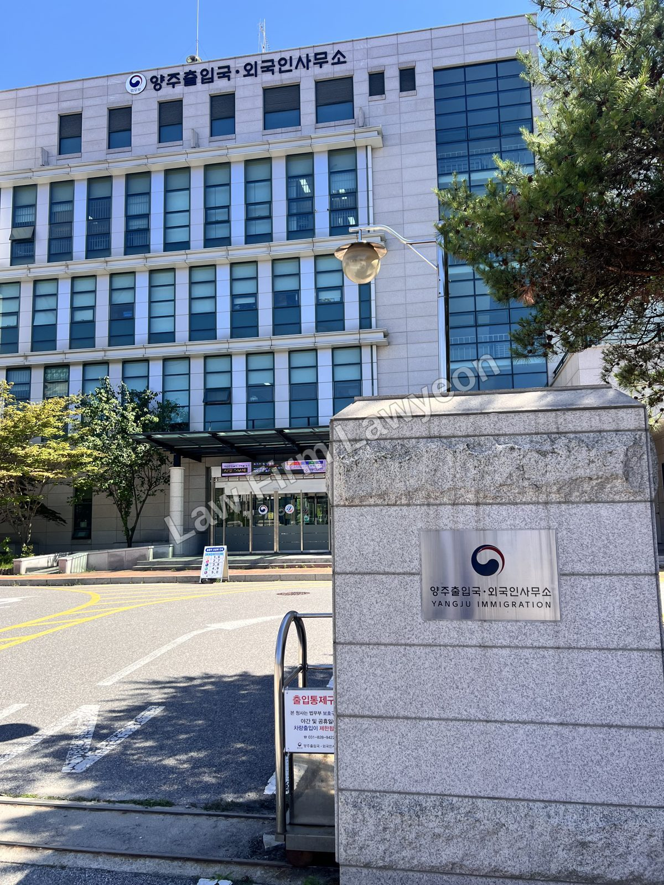
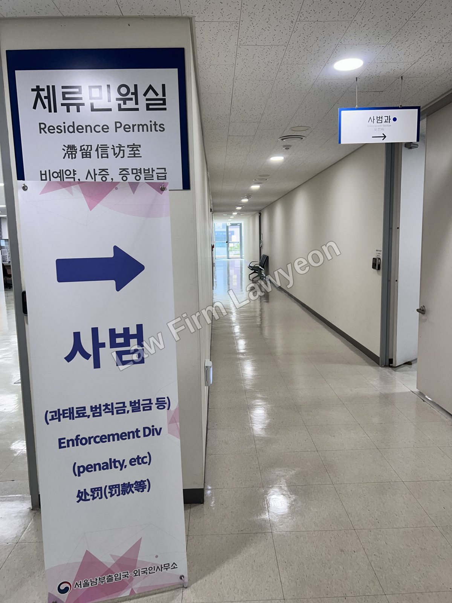

"음주운전으로 벌금을 받으면 강제출국되나요?" 벌금형이 곧바로 강제출국을 의미하지는 않지만, 벌금 액수와 재범 여부, 사고 발생 여부에 따라 출국명령이나 강제퇴거로 이어질 수 있습니다. 형사사건이 벌금으로 끝나더라도 출입국의 사범심사는 별도로 진행되며, 수사 단계에서 사건을 어떻게 소명하느냐에 따라 처분의 경중이 달라집니다. 혼자 대응하기보다, 처음부터 형사사건과 사범심사를 함께 준비하는 것이 중요합니다.
벌금을 내면 강제출국되나요?
"벌금만 내면 끝난다"는 생각은 외국인에게는 정확하지 않습니다.
내국인이 음주운전을 하면 형사처벌과 운전면허 행정처분을 받습니다. 외국인은 여기에 더해 출입국의 사범심사를 받습니다. 즉 한 번의 음주운전이 형사사건·면허 처분·출입국 절차라는 세 갈래로 동시에 진행됩니다.
따라서 형사사건이 벌금으로 끝났다고 해서 체류 문제까지 끝나는 것은 아닙니다. 벌금 액수, 재범 여부, 사고 발생 여부, 체류자격, 국내 생활 기반 등을 함께 고려하여 출국명령이나 강제퇴거로 이어질 수 있습니다.

음주운전은 형사상 어떻게 처벌되나요?
음주운전에 대한 형사처벌은 국적과 무관하게 같은 기준이 적용되며, 혈중알코올농도(BAC)에 따라 달라집니다.
| 혈중알코올농도 | 형사처벌 |
|---|---|
| 0.03% 이상 0.08% 미만 | 1년 이하 징역 또는 500만 원 이하 벌금 |
| 0.08% 이상 0.2% 미만 | 1~2년 징역 또는 500만~1천만 원 벌금 |
| 0.2% 이상 | 2~5년 징역 또는 1천만~2천만 원 벌금 |
정당한 사유 없는 음주측정 거부, 음주운전 중 사람을 다치게 하거나 사망에 이르게 한 경우는 단순 음주운전보다 무겁게 처벌됩니다. 일정 기간 내 음주운전 재범은 가중처벌 대상이 되어 정식재판·실형으로 이어질 수 있습니다.
외국인이 특히 주목해야 할 점은, 벌금 액수 자체가 이후 사범심사의 기준선이 된다는 것입니다. 형사사건에서 벌금을 조금이라도 낮추는 것이 체류 유지 여부에 직접 영향을 미칩니다.
형사사건과 사범심사는 어떻게 다른가요?
두 절차는 목적이 다릅니다.
형사사건은 경찰·검찰·법원이 주관하며, 범죄에 대한 형벌(벌금·징역 등)을 정하는 것이 목적입니다. 사범심사는 출입국이 주관하며, 국내 체류를 계속 허용할지를 판단합니다.
두 절차가 별개로 진행되므로, 형사처벌이 끝났다고 해서 출입국 문제가 자동으로 정리되는 것은 아닙니다. 형사 결과가 출입국에 통보되면 그 결과를 바탕으로 사범심사가 시작됩니다. 이때 형사사건에서 한 진술과 제출한 자료가 그대로 사범심사로 이어지므로, 처음부터 하나의 사건으로 보고 함께 대응해야 합니다.

벌금 얼마부터 출국·강제퇴거 대상인가요?
사범심사는 재량이 개입되지만, 실무상 통용되는 기준선이 있습니다. 음주운전을 포함한 형사범(벌금 사건)에 대해서는 대체로 다음과 같이 이해됩니다.
- 초범으로 벌금 300만 원 이상을 선고받으면 원칙적으로 출국명령 대상입니다.
- 최근 5년 이내 합산 벌금액이 500만 원 이상이면 강제퇴거 대상이 될 수 있습니다.
- 2년 이내 2회 이상, 또는 5년 이내 3회 이상 벌금형을 받은 경우에도 강제퇴거 대상이 될 수 있습니다.
- 교통 관련 벌금액이 500만 원 이상이면 강제퇴거 사유로 봅니다.
혈중알코올농도가 높거나 재범이거나 사고가 발생한 경우에는, 벌금 액수와 무관하게 체류기간 연장이 거부되거나 더 무거운 처분이 검토될 수 있습니다. 법원은 음주운전의 위험성을 엄중히 보고, 출입국 사안에서도 국민의 안전이라는 공익을 우선하는 경향이 있어 개인적 사정만으로 처분을 뒤집기가 쉽지 않습니다. 그만큼 수사 단계에서 제시하는 자료가 결정적입니다.
체류자격에 따라 영향이 다른가요?
같은 처벌이라도 체류자격에 따라 영향이 다릅니다.
유학(D-2)처럼 체류 목적이 좁게 정해진 자격은, 다음 연장 심사에서 전과가 불리하게 작용할 위험이 큽니다. 취업 비자와 장기 체류 비자도 영향을 받아, 전과는 자격 변경·체류기간 연장·영주 심사·귀화 심사에서 하나의 요소로 고려됩니다.
국민의 배우자(F-6)나 영주(F-5)처럼 국내 생활 기반이 탄탄한 경우에는, 가족관계나 정착 정도와 같은 인도적 사정이 처분을 완화하는 데 고려될 수 있습니다. 다만 이는 자동으로 인정되는 것이 아니라, 가족관계와 국내 생활 기반을 자료로 소명해야 반영됩니다.
수사 단계에서 무엇을 준비해야 하나요?
음주운전으로 적발되면, 경찰 수사 단계에서부터 형사사건과 출입국 대응을 함께 설계해야 합니다.
경찰 수사에서 한 진술은 기록으로 남아 이후 형사 양형과 사범심사에 그대로 쓰입니다. 준비 없이 한 진술은 불리하게 작용하는 경우가 많으므로, 수사 단계부터 진술을 정리하고 소명 자료를 함께 준비합니다.
사범심사에서 실제로 통하는 것은 막연한 반성의 표시가 아니라, 무거운 처분이 과도하다는 점을 보여주는 객관적 자료입니다. 국내 가족관계, 체류 기간, 부양가족, 생활 기반, 재범 방지 조치 등을 정리해 제시하면 처분의 경중이 달라질 수 있습니다.
가장 효과적인 방법은 둘을 동시에 준비하는 것입니다. 형사사건에서 벌금을 낮추고, 사범심사에서 체류 필요성을 소명하는 것입니다. 벌금이 앞의 기준선을 넘느냐가 처분의 방향을 좌우합니다.
처분을 다툴 수 있나요?
출국명령이나 강제퇴거 처분을 받았다면, 이를 다툴 수 있는 절차가 있습니다.
처분서를 받은 날로부터 7일 이내에 이의신청을 할 수 있고, 이의신청이 기각되면 90일 이내에 행정법원에 취소소송을 제기할 수 있습니다. 다만 소송만으로는 집행이 멈추지 않으므로, 출국을 막으려면 집행정지를 함께 신청해야 합니다.
출국명령·강제퇴거가 확정되면 위반의 성격에 따라 일정 기간 또는 무기한 재입국이 제한될 수 있으므로, 처분이 나온 뒤에 대응하는 것보다 수사 단계에서 대응하는 것이 훨씬 유리합니다.
자주 묻는 질문
본 글은 일반적 법률정보이며 개별 사건에 대한 자문이 아닙니다. 사범심사는 재량이 개입되고 사안과 시점에 따라 적용이 달라지므로, 본인 상황에 맞는 판단은 상담을 통해 확인하시기 바랍니다.